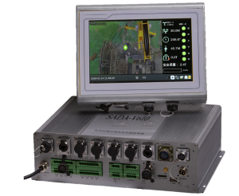
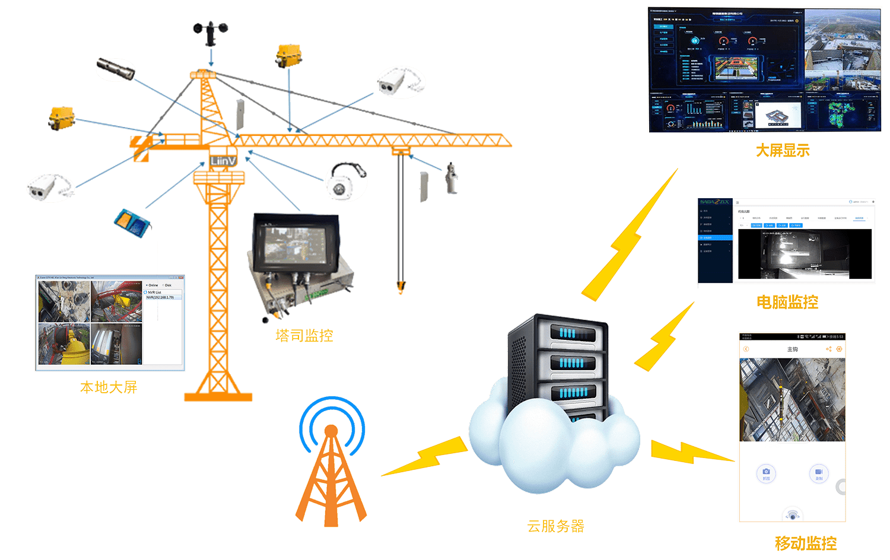
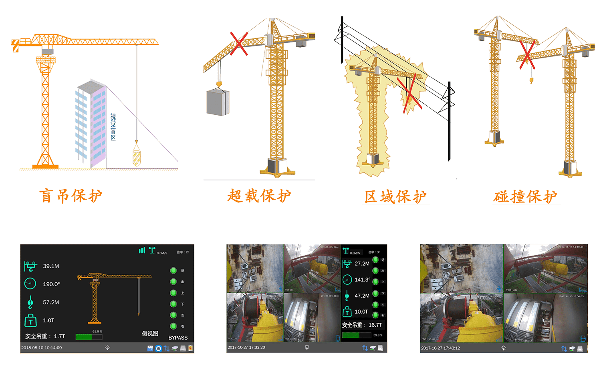

<div class='produce'>
	<div class='produce-content'>
		<div class='produce-details'>
			<div class='title-110'>
				LF-V610
			</div>
			<div class='description-110'>
				
				<p>
					<strong>LF-V610</strong>是一款集视频、力与力矩、防碰撞为一体的的建筑机械可视化高科技产品。<br/><br/>系统将多路网络高清摄像头与各种传感器相结合，对吊钩位置智能追踪、自动对焦，360°无死角全方位实时拍摄录像，借助传感器技术对力、力矩、多塔机协同作业进行监控诊断，有效杜绝盲吊、隔物吊，对物的不安全因素和人的不安全行为作出判断，有效预防事故的发生。
				</p>
			</div>
			<div class='feature-110'>
				功能特点
			</div>
			<ul class='feature-110-descript'>
				<li>显示功能：实时监控显示四路视频信息及各传感器的实时数据，其中吊钩摄像头倍率可支持脚踏板控制，方便塔司人员更清晰的看到并掌握工作现场情况；</li>
				<li>力矩功能：实现力、力矩的安全保护功能</li>
				<li>限位功能：各传感器危险阀值限制功能</li>
				<li>录像、回放功能：支持视频录像、回放等功能，便于塔机事故责任认定</li>
				<li>远程数据平台功能：设备通过GPRS模块将采集的数据发至远端服务器，通过产品开发单位提供的网址，管理人员不但可以监控现场设备的各种工作状态，还可以远程视频预览工作现场视频，以及远程录像回放等</li>
			</ul>
			<div class='feature-110'>
				系统架构
			</div>
			
			<div class='feature-110'>
				应用场景
			</div>
			
		</div>
	</div>
</div>